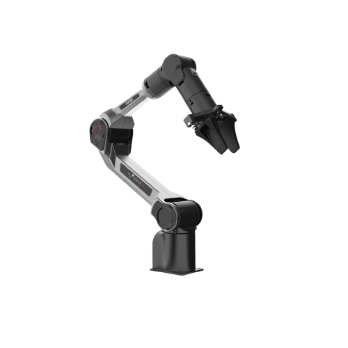

PiPER
Revision History
Revision |
Date (DD/MM/YYYY) |
Author |
Changes |
|---|---|---|---|
1 |
14/1/2025 |
Kang Wei |
Initial release |
1. Overview
{kind=link}

PiPER by AgileX Robotics is a powerful lightweight robotic arm that excels in precision, speed, and adaptability. Compact and user-friendly, it seamlessly fits into any environment, empowering users to innovate and achieve more with ease.
2. Specifications
Degree of Freedom |
6 |
Payload |
1.5 kg |
Weight |
4.2kg |
Repeatability |
±0.1mm |
Reach |
626mm |
Input Voltage |
DC 24V |
Materials |
Aluminum alloy boby, polymer shell |
Controller |
Integrated |
Communication |
CAN |
Programming |
Drag teaching / Offline trajectory / API / PC |
External Interface |
Power x 1, CAN x 1 |
Base Installation Dimensions |
70mm x 70mm (M5 x 4) |
3. Resources
Videos
Unboxing (CN): Video Link
Return to Home Position (CN): Video Link
Gripper Installation (CN): Video Link
Manuals
Software
Windows Application: APP
CAN Communication Protocol (CN): CAN Protocol
Development
SDK: piper_sdk
SDK_DEMO: piper_sdk_demo
ROS1: Piper_ros1_noetic
Gazebo： Gazebo
Issac SIM： piper_issac_sim
URDF: urdf
Moveit2: Moveit2